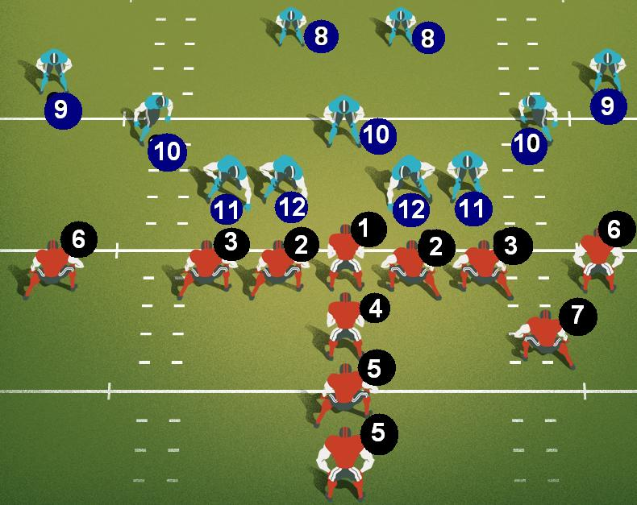

American football training

Attack
Center (C): responsible for snapping and blocking defenders.
Offensive Guards (OG): play close to the center, and have the mission of blocking defenders, to protect the quarterback.
Offensive Tackles (OT): They are in the line of attack, but they are the ones who play at the ends of it. Your job is to protect the quarterback.
Tight-End (TE): player who blocks and also receives passes, plays outside the offensive line.
Wide-Receivers (WR): They play wide and move around a lot to receive a quarterback pass.
Quarterback (QB): the brain of the team, responsible for organizing the offensive plays, he is the one who makes the passes.
Running Backs (RB): Runners, run when receiving the ball behind the attack line.
Tailback (TB):
Fullback (FB): Player who helps defend the Quarterback, and runs to receive the Quarterback's pass.
Defense
Defensive Tackles (DT): play in the middle of the defense line.
Defensive Ends (DE): play at the ends of the defense line.
Linebackers (LB): Play just behind the line of defense, advance to tackle and sometimes cover short passes.
Cornerbacks (CB): "mark" wide-receivers.
Safeties (SS or FS): responsible for coverage.
home page